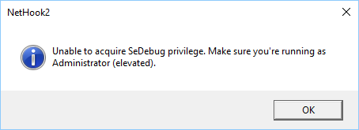

Read this before proceeding!
When you proceed a new console window will pop up which will inject a DLL into Steam's address space in order to read its network traffic. You can ignore it but it is important to check that the console window closes when you stop the session or the game has started and the match has run more than 1 minute. If it does not close for some reason then please close it yourself, but note that doing so will also close the Steam client, so it is recommended to close it while you are not playing.
Anti-Virus warnings
Some Anti-Virus software can terminate the NetHook2.dll's process due to a false positive. As it is being injected into a Steam process and because it does perform a memory patch it becomes sensitive to Anti-Virus software. When a false positive occurs Anti-Virus software most likely will delete the NetHook2.dll or makes it inaccessible, in that case you have to reinstall the Lobby Companion or replace the quarantined DLL. When the file will be quarantied your Steam process will also most likely crash and the DLL won't be any longer accessible thus you will get an error next time claiming that the "Specified module could not be found". Sometimes Windows can also block a DLL it does not trust making it inaccessible. To bypass the Anti-Virus you have to add an exception to Anti-Virus software not to scan that file. If you believe that DLL to be malicious feel free to read NetHook2's source code and compile the DLL on your own which you can then replace with the one that is included.
No activity
When you start the session and notice that the lobby state is not reflected in the UI and overlay and there is no activity in the console window like shown below then please stop the session, restart the Steam client and then start the session again.

Elevated permissions
When you see the following error then please restart the Lobby Companion in admin privileges or assign full permissions to AoE2HDLobbyCompanion.exe file.

Flickering overlay
When you start the lobby an overlay will be displayed which you can turn off in the settings. But if you enable "Show overlay only when game is focused" option then it might start flickering when you focus the game, to overcome this click multiple times in-game in random spot until the flickering stops.